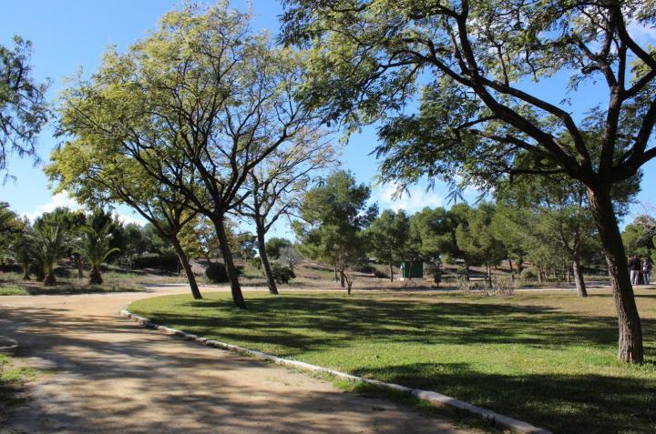
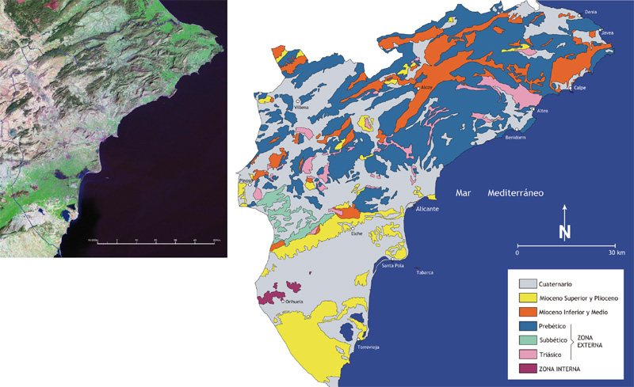
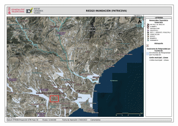
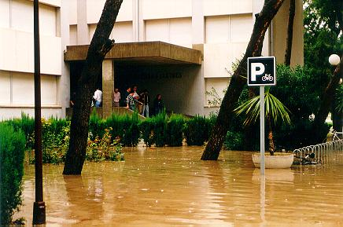
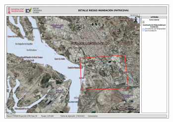
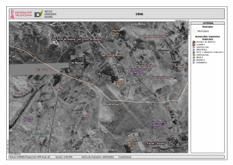
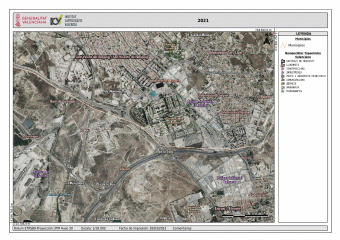

PARADA 6. BOSQUE ILUSTRADO
Cruzamos la carretera que bordea todo el campus de la UA y nos acercamos al Bosque Ilustrado, donde algunas especies vegetales tienen un cartel informativo.

Lo cruzamos para subir por el carril bici y a nuestra izquierda observamos los procesos erosivos que se han desarrollado en el corte abierto para realizar el acceso a la otra parte del campus de la UA. Las lluvias torrenciales características del clima mediterráneo han favorecido la aparición de incisiones en la ladera o cárcavas sobre los materiales más blandos. Sin embargo, nos dejan al descubierto el material más duro que hay en superficie o costra calcárea. En realidad, éste es el material que caracteriza a todo el glacis encostrado sobre el que se ha edificado el campus universitario. La Climatología, como la Geomorfología, son ramas dentro de la Geografía.
Si continuamos el carril bici hasta su punto más alto, podremos dar vista a los relieves que hay alrededor de este gran glacis, así como al Barranco de las Ovejas que lo secciona.
Mirando al norte, con la ciudad de Alicante a nuestras espaldas, y de Oeste a Este podemos observar todas las elevaciones prebéticas del fondo escénico. Entre ellas, destacan: Serra del Sit, Maigmó, Penya del Migjorn, Penyarroja, Carrasqueta, Els Plans, Cabeçó d’Or, Aitana y Puig Campana.
En un plano intermedio tenemos El Ventós, L’Escobella, Bec de l’Àguila.
En primer término, observamos la superficie de glacis y al oeste la Serra de Fontcalent y el Barranc de les Ovelles.

Geología provincia de Alicante. http://www.senderosdealicante.com/geologicos/alicante.html
Si observamos la información territorial disponible en el visor de la Generalitat Valenciana (GVA) sobre el Plan de Acción Territorial de prevención sobre el Riesgo de Inundación de la Comunidad Valenciana (PATRICOVA) podemos observar cómo los cursos fluviales tienen una dirección NO-SE. Los Riesgos Naturales, al igual que la Climatología, son campos de estudio de la Geografía.

De este modo, podemos comprender que cuando se producen lluvias torrenciales de gran envergadura, la UA (dentro del recuadro rojo en el mapa) está afectada por las aguas de la Rambla del Rambutxar y el Barranc de les Ovelles. Así sucedió el 30 de septiembre de 1997, como puedes comprobar en la siguiente foto de la entrada del edificio de Filosofía y Letras-Geografía, donde hemos comenzado la ruta por el campus.
Si quieres ver más imágenes de ese día o de los posteriores, la UA dispone de un amplio archivo fotográfico: https://web.ua.es/es/secretaria-gral/memoria/1997-98/inundaci.htm

Con posterioridad a este evento meteorológico, se llevaron a cabo obras de adecuación en el Barranc de les Ovelles por lo que, el riesgo de inundación del campus, ha disminuido (dentro del recuadro rojo en el mapa). Por otra parte, en el mapa de detalle de riesgo de inundación, podemos observar cómo la vía férrea de cercanías que une Sant Vicent del Raspeig con Alacant, inaugurada en 2007, actúa de presa y evita o reduce también el riesgo.

Los cambios de usos del suelo que ha habido en estos municipios, desde la década de los años 80 del siglo pasado hasta la actualidad, han sido vertiginosos. Los campos de cultivo de secano y de huerta dieron paso a las infraestructuras viarias y construcción urbanística; de modo que finalmente Alacant y Sant Vicent del Raspeig son un continuo urbano o conurbación. El visor de la GVA te ofrece estas imágenes aéreas de 1956 y la ortofoto de 2021. Las dinámicas territoriales también son analizadas en Geografía y plasmadas en mapas: análisis territorial de cambios de usos del suelo.


Más información en:
{kind=link}